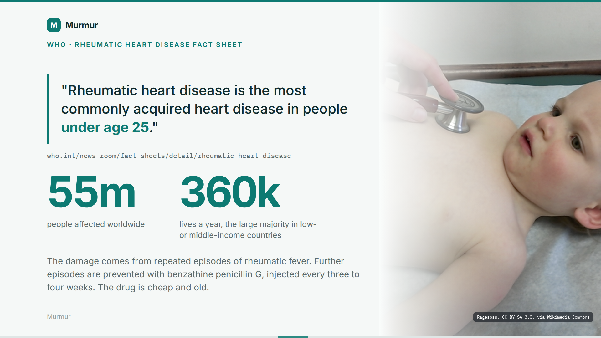
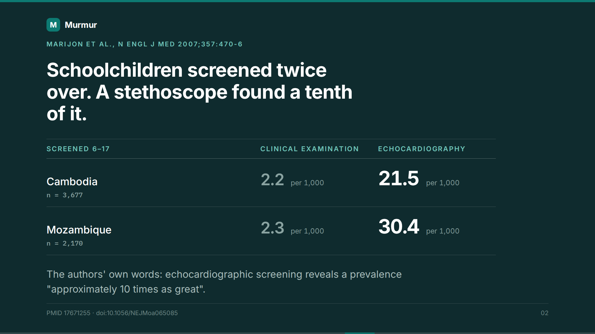
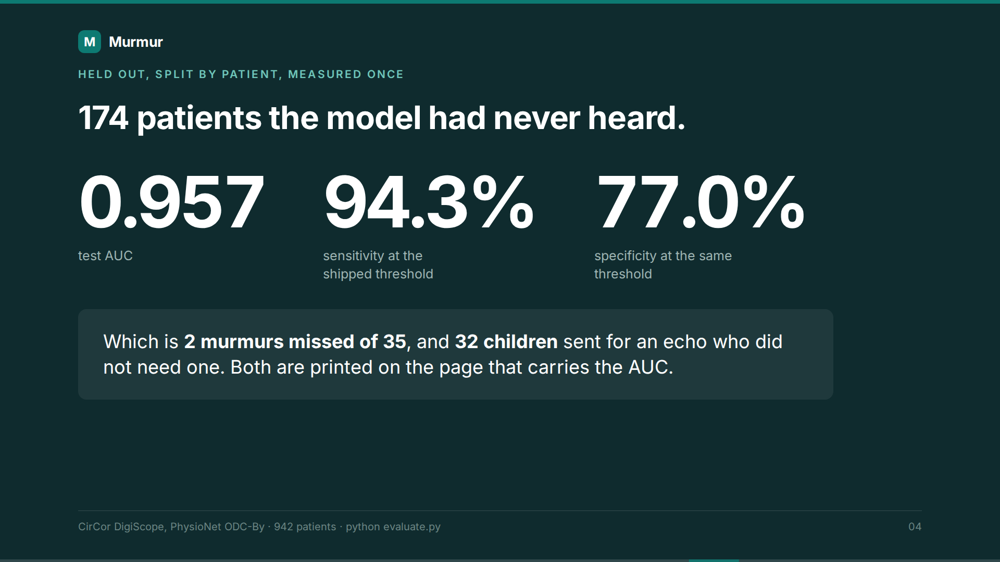
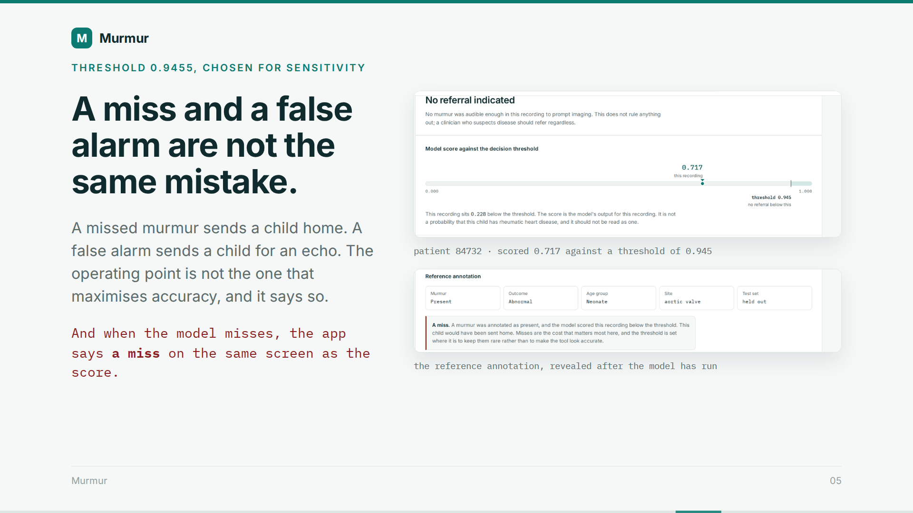
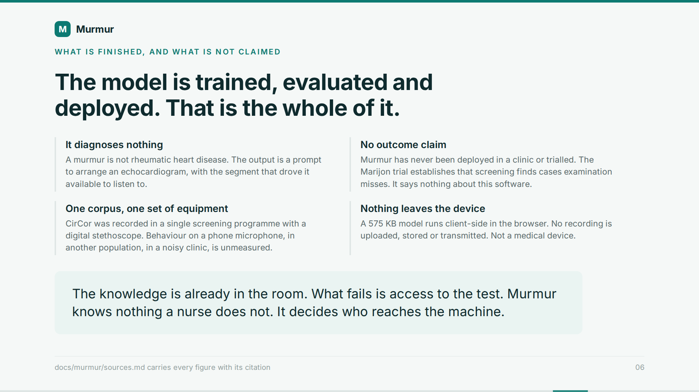

|
SLIDE 1 — THE MOST COMMONLY ACQUIRED HEART DISEASE UNDER 25
0:00 → 0:30
 |
The World Health Organization calls rheumatic heart disease the most commonly acquired heart disease in people under age twenty-five. Fifty-five million people, and about three hundred and sixty thousand lives a year, the large majority of them in low- or middle-income countries. The damage comes from repeated episodes of rheumatic fever, and further episodes are prevented with benzathine penicillin G, injected every three to four weeks. The drug is cheap and old. Finding the child is the hard part. 79 words · 31s |
|
SLIDE 2 — A STETHOSCOPE FOUND A TENTH OF IT
0:30 → 0:50
 |
Marijon and colleagues screened schoolchildren in Cambodia and Mozambique twice over. Once by clinical examination, once by echocardiography. In Cambodia, examination found two point two cases per thousand. Echo found twenty-one point five. In Mozambique, two point three against thirty point four. The authors put it at approximately ten times as great. 52 words · 20s |
| SLIDE 3 — THE KNOWLEDGE IS ALREADY IN THE ROOM 0:50 → 1:15 | Nothing in that gap is a knowledge problem. What is missing is the echo. So Murmur does not diagnose rheumatic heart disease, or anything else. It listens to a heart-sound recording and says whether a murmur is audible enough to be worth an echocardiogram. The decision to refer belongs to a clinician. The tool only decides who gets put in front of one. 63 words · 24s |
|
SLIDE 4 — 174 PATIENTS THE MODEL HAD NEVER HEARD
1:15 → 1:39
 |
The test set is a hundred and seventy-four patients, split by patient, so nobody contributes to both training and test. Area under the curve, zero point nine five seven. At the shipped threshold, sensitivity ninety-four point three per cent and specificity seventy-seven per cent. That is two murmurs missed out of thirty-five, and thirty-two children sent for an echo who did not need one. 64 words · 25s |
|
SLIDE 5 — A MISS AND A FALSE ALARM ARE NOT THE SAME MISTAKE
1:39 → 2:01
 |
That threshold is not the one that makes the tool look most accurate. A missed murmur sends a child home. A false alarm sends a child for an echocardiogram. Those are different mistakes and the operating point says so. When the model misses one, the app prints the miss on the same screen as the score. 56 words · 22s |
|
SLIDE 6 — WHAT IS NOT CLAIMED
2:01 → 2:25
 |
Murmur has never been deployed in a clinic or trialled, and nothing here says it improves any outcome. The corpus was recorded in one screening programme with a digital stethoscope, so behaviour on a phone microphone, in another population, in a noisy clinic, is unmeasured. The model is five hundred and seventy-five kilobytes and runs in the browser. No recording leaves the device. 63 words · 24s |
| RECORDING NOTES 2:25 → 2:25 | Every figure above is in docs/murmur/sources.md with its citation. Drop in this order if a take runs long: 1. The penicillin sentence on SLIDE 1. 2. The Mozambique pair on SLIDE 2; Cambodia already makes the point. Do not cut SLIDE 3, the two-missed-of-thirty-five line on SLIDE 4, or SLIDE 6. 0 words · 0s |